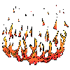

|
Transl. Christian Souchon 01.01.2005 (c) (r) All rights reserved |


|
Transl. Christian Souchon 01.01.2005 (c) (r) All rights reserved |
|
Commentaire d'un jeune poête anglais, Adam REYNOLDS: "J'aime beaucoup le passage: 'Et gravit la hauteur qui le porte, l'apaise. Il voit les toits, les champs, il reconnaît des voix.' Il existe entre ces poèmes (consacrés au chat) une continuité de sentiment, celui de la lassitude au milieu d'un monde de braillards." |
Comment of a young British poet, Adam REYNOLDS: "I really enjoyed the lines 'He climbs up to the top and hopes to recover. There he sees roofs and fields, recognizes voices.' There is a continuity of feeling that moves throughout these poems, the tired man in the screaming world." |
Listen to "Wild cat" in English